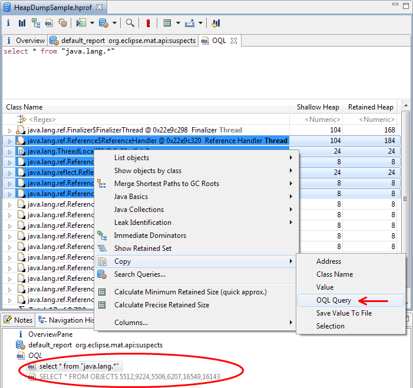

Memory Analyzer allows to query the heap dump with custom SQL-like queries. OQL represents classes as tables, objects as rows, and fields as columns.
SELECT * FROM [ INSTANCEOF ] <class name="name"> [ WHERE <filter-expression> ] </filter-expression></class>
To open an OQL editor use the toolbar button  :
:
OQL editor is divided into two areas:
- Text area to type in the query (upper area)
- Result area to display the result of the query execution

Use F5 or Ctrl-Enter or toolbar button  to execute the query.
to execute the query.
Basic OQL syntax is as follows:
SELECT * FROM [ INSTANCEOF ] <class name> [ WHERE <filter-expression> ]
The text area has autocompletion for class names, class name regular expressions, field names, attributes and methods. See OQL autocompletion.
The navigation history shows previous OQL queries. Clicking on a previous query executes it again. On many result panes, selecting some objects, then copies an OQL representation of the objects. This OQL can then be pasted into the OQL editor text area. This works from the OQL result area itself, and also copies the column details as well as the objects. 